Equation Sets
The various dispersion models each depend upon several parameters which are themselves, often, correlations. For any given parameter there are several different correlations in the literature. To make this more transparent, sets of correlations from standard texts have been prepared (in addition to the default correlations), allowing the user to specify which set to use.
Not all equation sets cover all of the possible correlations, unless otherwise specified the default correlations are used. Some models use internal models for the wind profile and dispersion, in such cases changing the equation set has no effect.
Windspeed
For SimpleAtmospheres the windspeed is determined using a power-law relationship:
\[ u = u_{R} \left( z \over z_{R} \right)^{p}\]
There are five equation sets that give p as a function of stability class
DefaultSet– see the defition in release scenariosCCPSRural– AIChE/CCPS 1999CCPSUrban– AIChE/CCPS 1999ISC3Rural– US EPA 1995ISC3Urban– US EPA 1995
| Stability Class | DefaultSet | CCPSRural | CCPSUrban | ISC3Rural | ISC3Urban |
|---|---|---|---|---|---|
| A | 0.108 | 0.07 | 0.15 | 0.07 | 0.15 |
| B | 0.112 | 0.07 | 0.15 | 0.07 | 0.15 |
| C | 0.120 | 0.10 | 0.20 | 0.10 | 0.20 |
| D | 0.142 | 0.15 | 0.25 | 0.15 | 0.25 |
| E | 0.203 | 0.35 | 0.40 | 0.35 | 0.30 |
| F | 0.253 | 0.55 | 0.60 | 0.55 | 0.30 |
The CCPS and ISC3 correlations both use the same parameters for Rural settings but differ for Urban settings with stable atmospheres (class E and F)
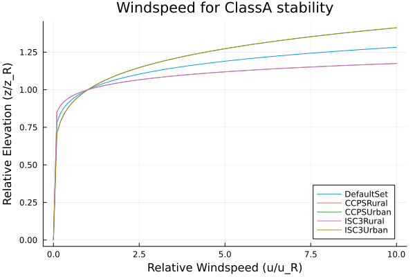 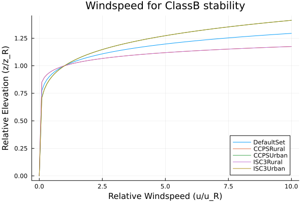 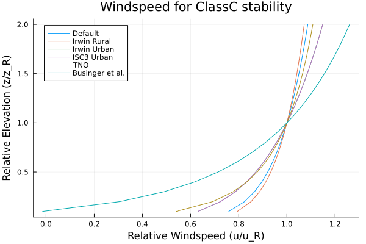 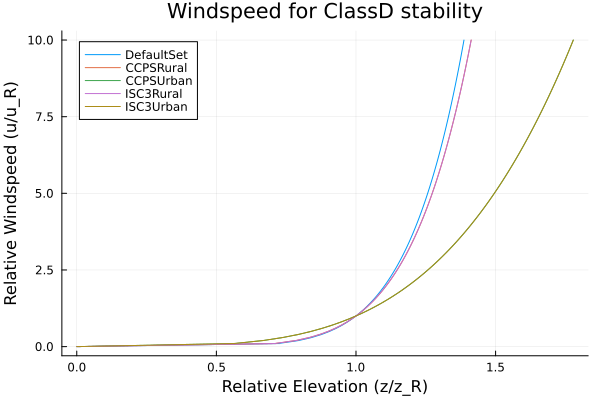 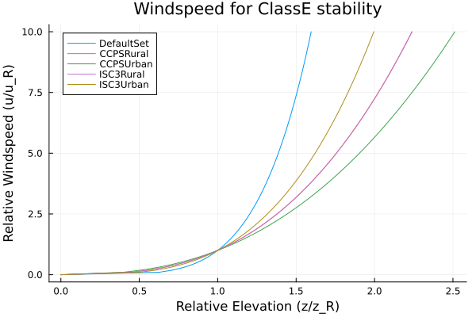 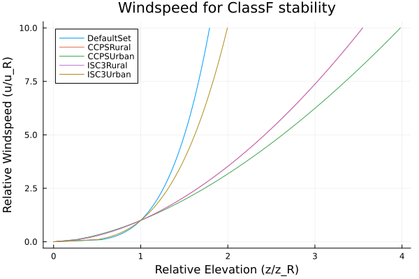
Plume Dispersion
Plume dispersion parameters, $\sigma_y$ and $\sigma_z$ are functions of downwind distance and can take many different forms from simple power-law relations to complex piece-wise functions.
Crosswind Dispersion
There are seven equation sets that set correlations for the crosswind dispersion.
DefaultSet– see the defition in plume modelsCCPSRural– AIChE/CCPS 1999CCPSUrban– AIChE/CCPS 1999ISC3Rural– US EPA 1995ISC3Urban– US EPA 1995TNO– These are the correlations given in the TNO Yellow Book (Bakkum and Duijm 2005)Turner– A set of digitized curves based on Turner (1970), as presented in Lees 1996
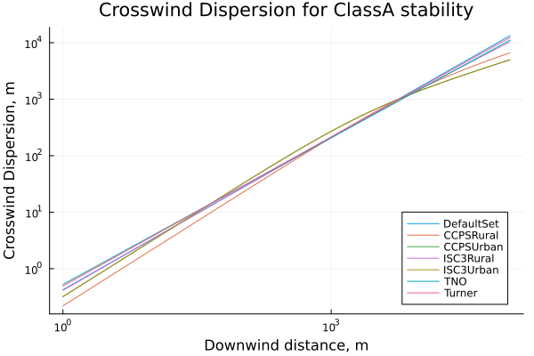 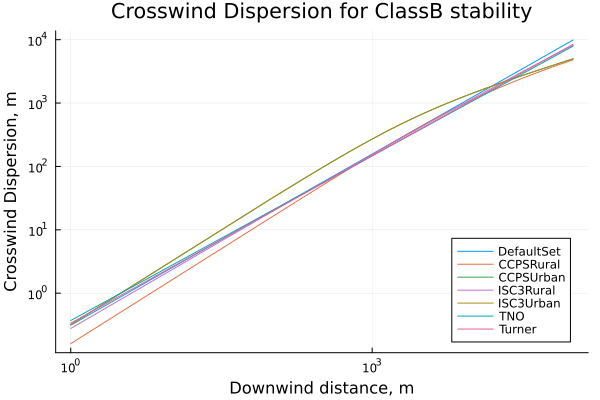 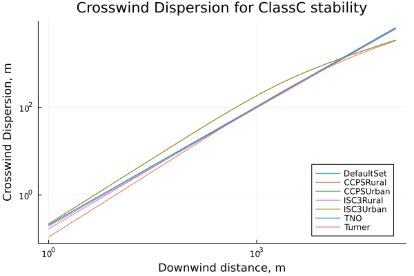 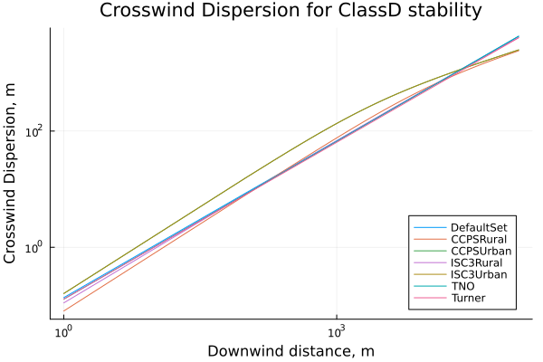  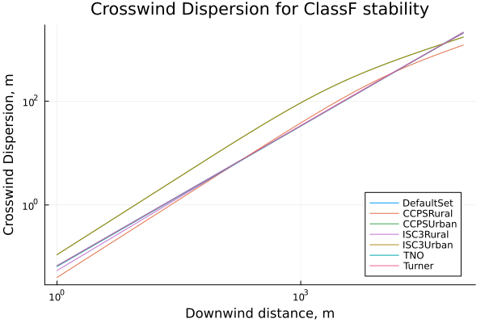
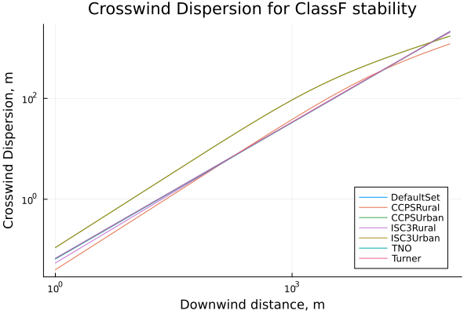
Vertical Dispersion
There are seven equation sets that set correlations for the crosswind dispersion.
DefaultSet– see the defition in plume modelsCCPSRural– AIChE/CCPS 1999CCPSUrban– AIChE/CCPS 1999ISC3Rural– US EPA 1995ISC3Urban– US EPA 1995TNO– These are the correlations given in the TNO Yellow Book (Bakkum and Duijm 2005)Turner– A set of digitized curves based on Turner (1970), as presented in Lees 1996
The CCPS correlations for the vertical plume dispersion, $\sigma_z$, in urban terrain contains two typos. These have been corrected as per Griffiths (1994).
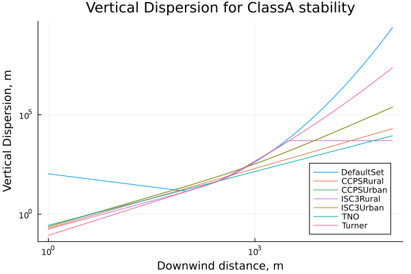 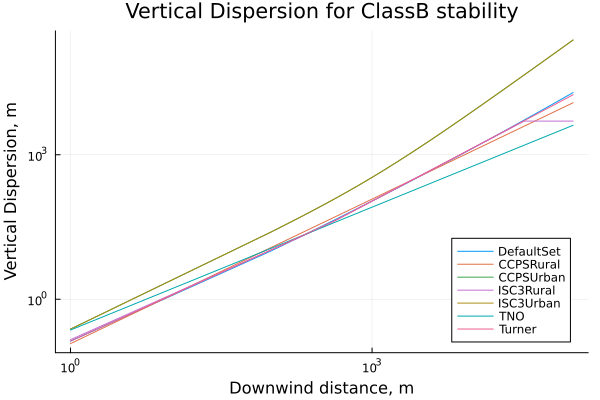 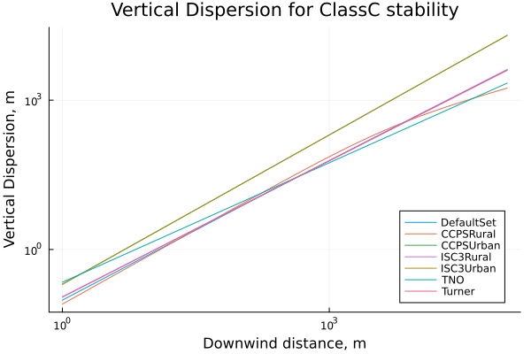 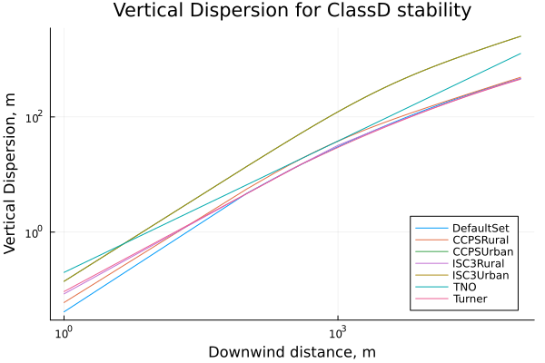 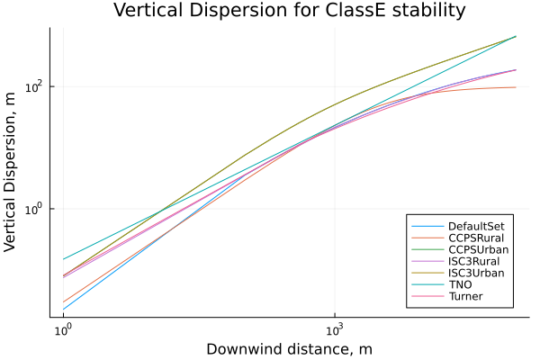 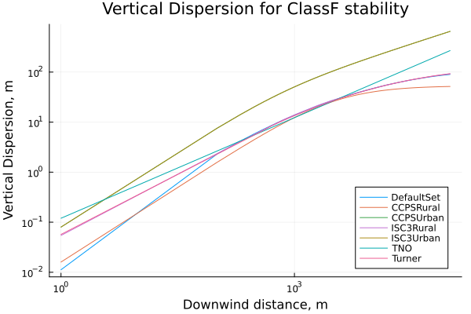
Puff Dispersion
Puff dispersion parameters, $\sigma_x$, $\sigma_y$ and $\sigma_z$ are functions of the downwind distance to the cloud (puff) center and are generally given as power law relations. There are many fewer sources for these.
Downwind Dispersion
There are four equation sets that set correlations for the downwind dispersion.
DefaultSet– see the defition in plume modelsCCPSRural– AIChE/CCPS 1999CCPSUrban– AIChE/CCPS 1999TNO– These are the correlations given in the TNO Yellow Book (Bakkum and Duijm 2005)
Though in practice there are only two: the CCPS correlations do not distinguish between urban and rural locations for puff dispersion, and the default correlations are the CCPS correlations.
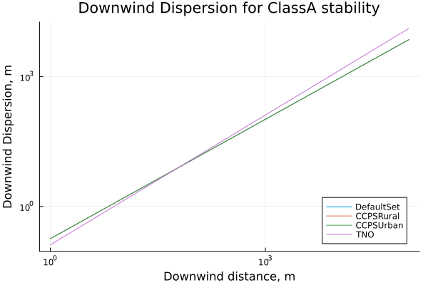 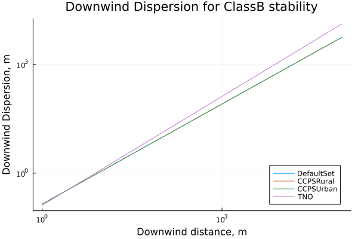 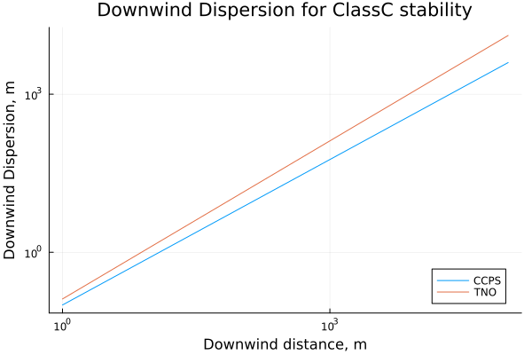 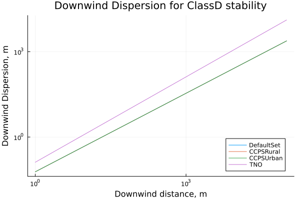 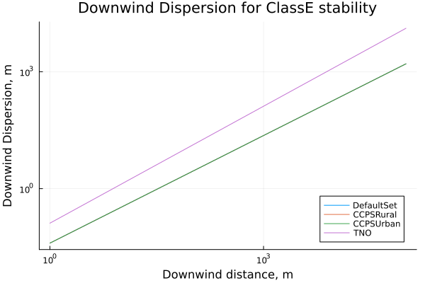 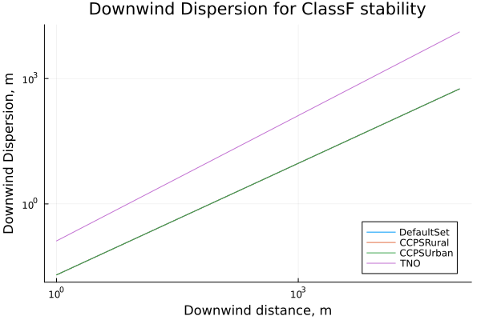
Crosswind Dispersion
There are four equation sets that set correlations for the crosswind dispersion.
DefaultSet– see the defition in plume modelsCCPSRural– AIChE/CCPS 1999CCPSUrban– AIChE/CCPS 1999TNO– These are the correlations given in the TNO Yellow Book (Bakkum and Duijm 2005)
Though in practice there are only two: the CCPS correlations do not distinguish between urban and rural locations for puff dispersion, and the default correlations are the CCPS correlations.
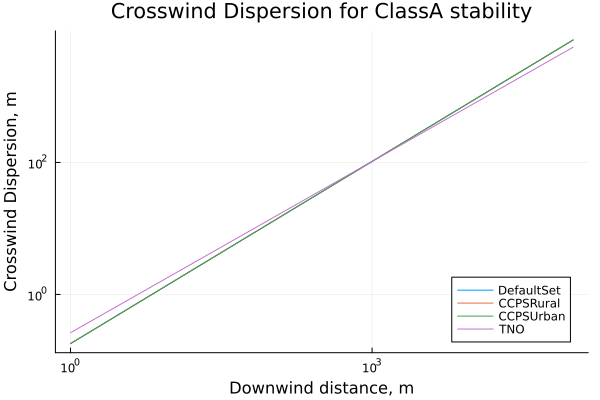 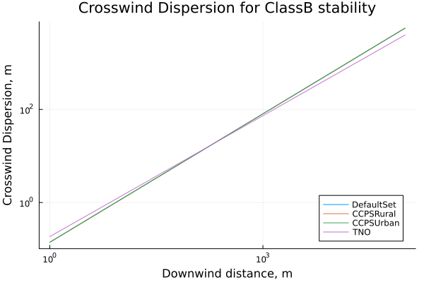  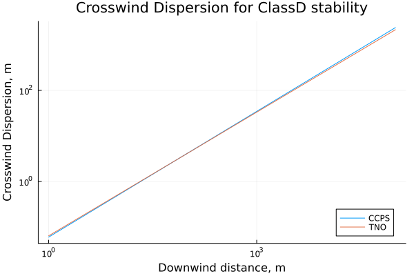 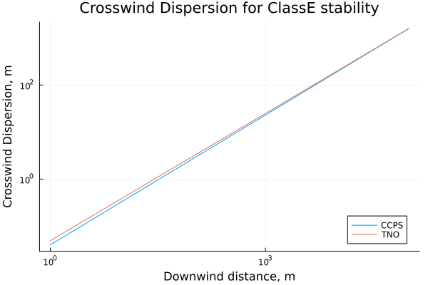 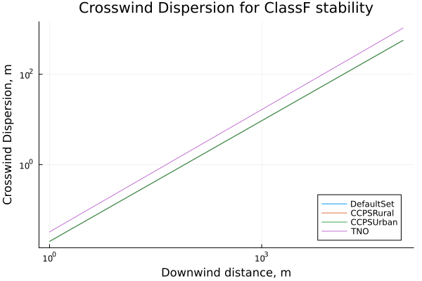
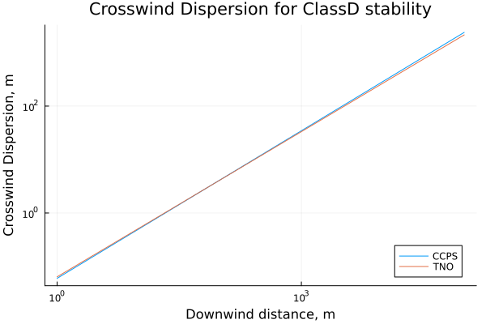 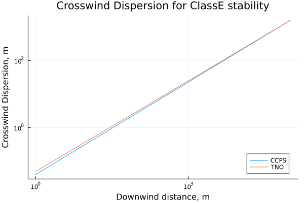 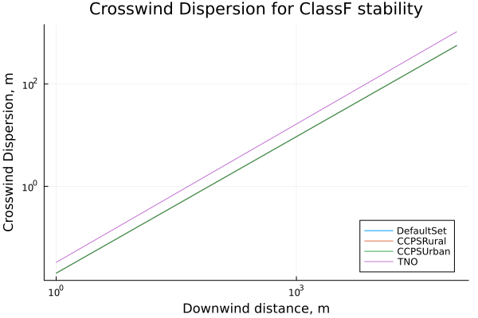
Vertical Dispersion
There are four equation sets that set correlations for the vertical dispersion.
DefaultSet– see the defition in plume modelsCCPSRural– AIChE/CCPS 1999CCPSUrban– AIChE/CCPS 1999TNO– These are the correlations given in the TNO Yellow Book (Bakkum and Duijm 2005)
Though in practice there are only two: the CCPS correlations do not distinguish between urban and rural locations for puff dispersion, and the default correlations are the CCPS correlations.
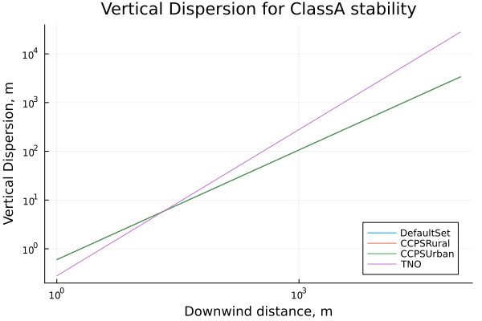 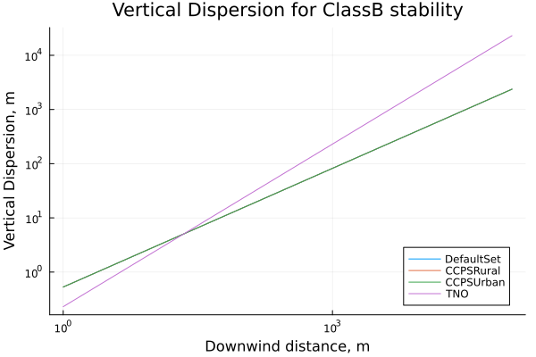 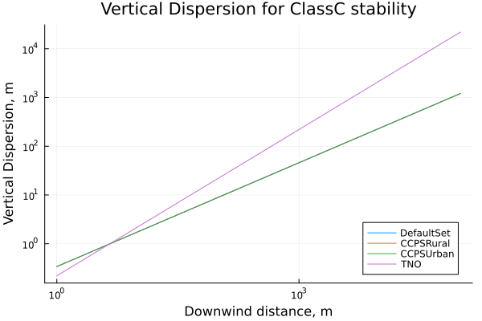 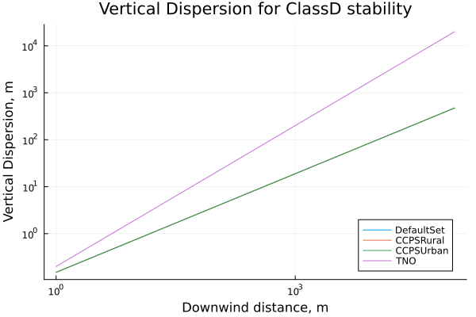 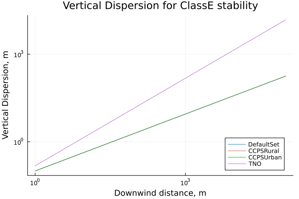 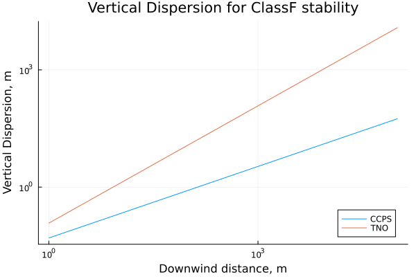